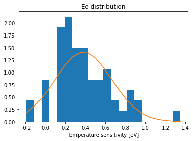
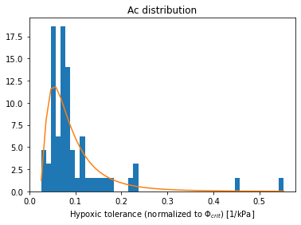
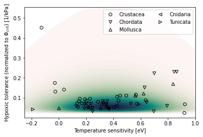

Read traits and examine distributions
Contents
%load_ext autoreload
%autoreload 2
from itertools import product
import numpy as np
import xarray as xr
from scipy import stats as scistats
import seawater as sw
import matplotlib.pyplot as plt
import traits_db
import metabolic as mi
import util
Read traits and examine distributions¶
df = traits_db.df_mi
print(len(df))
df.head()
61
| Eo | Ao | Ac | Phi_crit | Phylum | |
|---|---|---|---|---|---|
| 0 | -0.027836 | 0.264715 | 0.131959 | 2.006040 | Crustacea |
| 1 | 0.038027 | 0.252578 | 0.141861 | 1.780456 | Crustacea |
| 2 | 0.131972 | 0.230068 | 0.073638 | 3.124330 | Crustacea |
| 3 | -0.030067 | 0.286307 | 0.174423 | 1.641453 | Crustacea |
| 4 | 0.362569 | 0.218524 | 0.048415 | 4.513525 | Chordata |
Plot trait histograms¶
trait_pdfs = dict()
fig, ax = plt.subplots()
beta = scistats.norm.fit(df.Eo.values)
n, bins, h = ax.hist(df.Eo.values, 20, density=True);
pdf_fitted = scistats.norm.pdf(bins, *beta)
ax.plot(bins, pdf_fitted)
ax.set_title('Eo distribution')
ax.set_xlabel(util.attrs_label(df.Eo.attrs));
trait_pdfs['Eo'] = dict(
bins=bins,
func_form='norm',
beta=beta
)

fig, ax = plt.subplots()
trait = 'Ac'
trait_values = df[trait].values
beta = scistats.lognorm.fit(trait_values)
n, bins, h = ax.hist(trait_values, 50, density=True);
pdf_fitted = scistats.lognorm.pdf(bins, *beta)
ax.plot(bins, pdf_fitted)
ax.set_title(f'{trait} distribution')
ax.set_xlabel(util.attrs_label(df[trait].attrs));
trait_pdfs[trait] = dict(
bins=bins,
func_form='log_norm',
beta=beta
)

Phyla = list(df.Phylum.unique())
Phyla
['Crustacea', 'Chordata', 'Mollusca', 'Cnidaria', 'Tunicata']
df.Ac.max()
0.552778623242043
import cmocean
markerorder = ["o", "v", "^", "<", ">", "s", "p", "P"]
x_beta = trait_pdfs['Eo']['beta']
y_beta = trait_pdfs['Ac']['beta']
Eo_bins = np.linspace(-1., 2., 30)
Ac_bins = np.logspace(-3, np.log10(df.Ac.max()), 50)
X, Y = np.meshgrid(Eo_bins, Ac_bins)
Z1, Z2 = np.meshgrid(scistats.norm.pdf(Eo_bins, *x_beta),
scistats.lognorm.pdf(Ac_bins, *y_beta)
)
fig, ax = plt.subplots() #figsize=(6, 6))
mx = np.max(Z1*Z2)
cf = ax.contourf(X, Y, Z1*Z2 / mx,
cmap=cmocean.cm.tempo,
levels=np.arange(0.001, 1.02, 0.01),
)
#plt.colorbar(cf)
for i, phylum in enumerate(Phyla):
ndx = df.Phylum == phylum
ax.plot(df.Eo.loc[ndx], df.Ac.loc[ndx],
linestyle='none',
marker=markerorder[i],
color='k',
markerfacecolor='none',
label=phylum,
)
ax.set_xlabel(util.attrs_label(df.Eo.attrs));
ax.set_ylabel(util.attrs_label(df.Ac.attrs));
ax.set_xlim((-0.25, 1));
#ax.set_ylim((0, 0.4));
ax.legend(ncol=2);
plt.savefig(f'trait-space-idealized.png', dpi=300)

25/100
0.25
import thermodyn
ds = xr.merge((
util.retrieve_woa_dataset('oxygen', 0).isel(time=0, drop=True)[['o_an']],
util.retrieve_woa_dataset(['temperature', 'salinity'], 0).isel(time=0, drop=True)[['t_an', 's_an']],
)).sel(depth=slice(0, 1000.))
depth = xr.full_like(ds.t_an, fill_value=1.) * ds.depth
ds['pO2'] = thermodyn.compute_pO2(ds.o_an, ds.t_an, ds.s_an, depth)
ds = ds.compute()
ds
<xarray.Dataset>
Dimensions: (depth: 47, lat: 180, lon: 360)
Coordinates:
* lat (lat) float32 -89.5 -88.5 -87.5 -86.5 -85.5 ... 86.5 87.5 88.5 89.5
* lon (lon) float32 -179.5 -178.5 -177.5 -176.5 ... 177.5 178.5 179.5
* depth (depth) float32 0.0 5.0 10.0 15.0 20.0 ... 850.0 900.0 950.0 1e+03
Data variables:
o_an (depth, lat, lon) float32 nan nan nan nan ... 303.3 303.3 303.3
t_an (depth, lat, lon) float32 nan nan nan ... -0.1925 -0.1925 -0.1925
s_an (depth, lat, lon) float32 nan nan nan nan ... 34.91 34.91 34.91
pO2 (depth, lat, lon) float32 nan nan nan nan ... 20.49 20.49 20.49
Attributes: (12/49)
Conventions: CF-1.6, ACDD-1.3
title: World Ocean Atlas 2018 : mole_concentrat...
summary: Climatological mean dissolved oxygen for...
references: Garcia, H. E., K. Weathers, C. R. Paver,...
institution: National Centers for Environmental Infor...
comment: global climatology as part of the World ...
... ...
publisher_email: NCEI.info@noaa.gov
nodc_template_version: NODC_NetCDF_Grid_Template_v2.0
license: These data are openly available to the p...
metadata_link: https://www.nodc.noaa.gov/OC5/woa18/
date_created: 2019-07-29
date_modified: 2019-07-29 xarray.Dataset
- depth: 47
- lat: 180
- lon: 360
- lat(lat)float32-89.5 -88.5 -87.5 ... 88.5 89.5
- standard_name :
- latitude
- long_name :
- latitude
- units :
- degrees_north
- axis :
- Y
- bounds :
- lat_bnds
array([-89.5, -88.5, -87.5, -86.5, -85.5, -84.5, -83.5, -82.5, -81.5, -80.5, -79.5, -78.5, -77.5, -76.5, -75.5, -74.5, -73.5, -72.5, -71.5, -70.5, -69.5, -68.5, -67.5, -66.5, -65.5, -64.5, -63.5, -62.5, -61.5, -60.5, -59.5, -58.5, -57.5, -56.5, -55.5, -54.5, -53.5, -52.5, -51.5, -50.5, -49.5, -48.5, -47.5, -46.5, -45.5, -44.5, -43.5, -42.5, -41.5, -40.5, -39.5, -38.5, -37.5, -36.5, -35.5, -34.5, -33.5, -32.5, -31.5, -30.5, -29.5, -28.5, -27.5, -26.5, -25.5, -24.5, -23.5, -22.5, -21.5, -20.5, -19.5, -18.5, -17.5, -16.5, -15.5, -14.5, -13.5, -12.5, -11.5, -10.5, -9.5, -8.5, -7.5, -6.5, -5.5, -4.5, -3.5, -2.5, -1.5, -0.5, 0.5, 1.5, 2.5, 3.5, 4.5, 5.5, 6.5, 7.5, 8.5, 9.5, 10.5, 11.5, 12.5, 13.5, 14.5, 15.5, 16.5, 17.5, 18.5, 19.5, 20.5, 21.5, 22.5, 23.5, 24.5, 25.5, 26.5, 27.5, 28.5, 29.5, 30.5, 31.5, 32.5, 33.5, 34.5, 35.5, 36.5, 37.5, 38.5, 39.5, 40.5, 41.5, 42.5, 43.5, 44.5, 45.5, 46.5, 47.5, 48.5, 49.5, 50.5, 51.5, 52.5, 53.5, 54.5, 55.5, 56.5, 57.5, 58.5, 59.5, 60.5, 61.5, 62.5, 63.5, 64.5, 65.5, 66.5, 67.5, 68.5, 69.5, 70.5, 71.5, 72.5, 73.5, 74.5, 75.5, 76.5, 77.5, 78.5, 79.5, 80.5, 81.5, 82.5, 83.5, 84.5, 85.5, 86.5, 87.5, 88.5, 89.5], dtype=float32) - lon(lon)float32-179.5 -178.5 ... 178.5 179.5
- standard_name :
- longitude
- long_name :
- longitude
- units :
- degrees_east
- axis :
- X
- bounds :
- lon_bnds
array([-179.5, -178.5, -177.5, ..., 177.5, 178.5, 179.5], dtype=float32)
- depth(depth)float320.0 5.0 10.0 ... 900.0 950.0 1e+03
- standard_name :
- depth
- bounds :
- depth_bnds
- positive :
- down
- units :
- meters
- axis :
- Z
array([ 0., 5., 10., 15., 20., 25., 30., 35., 40., 45., 50., 55., 60., 65., 70., 75., 80., 85., 90., 95., 100., 125., 150., 175., 200., 225., 250., 275., 300., 325., 350., 375., 400., 425., 450., 475., 500., 550., 600., 650., 700., 750., 800., 850., 900., 950., 1000.], dtype=float32)
- o_an(depth, lat, lon)float32nan nan nan ... 303.3 303.3 303.3
- standard_name :
- mole_concentration_of_dissolved_molecular_oxygen_in_sea_water
- long_name :
- Objectively analyzed mean fields for mole_concentration_of_dissolved_molecular_oxygen_in_sea_water at standard depth levels.
- cell_methods :
- area: mean depth: mean time: mean within years time: mean over years
- grid_mapping :
- crs
- units :
- micromoles_per_kilogram
array([[[ nan, nan, nan, ..., nan, nan, nan], [ nan, nan, nan, ..., nan, nan, nan], [ nan, nan, nan, ..., nan, nan, nan], ..., [384.51904, 384.7848 , 385.05753, ..., 383.99033, 384.1558 , 384.33804], [380.85925, 380.98764, 381.0719 , ..., 380.6808 , 380.75272, 380.80106], [377.8135 , 377.8135 , 377.8135 , ..., 377.8135 , 377.8135 , 377.8135 ]], [[ nan, nan, nan, ..., nan, nan, nan], [ nan, nan, nan, ..., nan, nan, nan], [ nan, nan, nan, ..., nan, nan, nan], ... [303.32172, 303.27963, 303.23682, ..., 303.41385, 303.38934, 303.35886], [303.61334, 303.5974 , 303.57556, ..., 303.64835, 303.64026, 303.62747], [303.24432, 303.24432, 303.24432, ..., 303.24432, 303.24432, 303.24432]], [[ nan, nan, nan, ..., nan, nan, nan], [ nan, nan, nan, ..., nan, nan, nan], [ nan, nan, nan, ..., nan, nan, nan], ..., [302.14172, 302.06787, 301.99554, ..., 302.32193, 302.2654 , 302.2065 ], [302.98813, 302.9579 , 302.92007, ..., 303.07404, 303.04706, 303.01746], [303.33112, 303.33112, 303.33112, ..., 303.33112, 303.33112, 303.33112]]], dtype=float32) - t_an(depth, lat, lon)float32nan nan nan ... -0.1925 -0.1925
- standard_name :
- sea_water_temperature
- long_name :
- Objectively analyzed mean fields for sea_water_temperature at standard depth levels.
- cell_methods :
- area: mean depth: mean time: mean within years time: mean over years
- grid_mapping :
- crs
- units :
- degrees_celsius
array([[[ nan, nan, nan, ..., nan, nan, nan], [ nan, nan, nan, ..., nan, nan, nan], [ nan, nan, nan, ..., nan, nan, nan], ..., [-1.59811 , -1.59851 , -1.59831 , ..., -1.60621 , -1.60921 , -1.61041 ], [-1.62471 , -1.62641 , -1.63071 , ..., -1.6275101 , -1.62441 , -1.62571 ], [-1.63721 , -1.63721 , -1.63721 , ..., -1.63721 , -1.63721 , -1.63721 ]], [[ nan, nan, nan, ..., nan, nan, nan], [ nan, nan, nan, ..., nan, nan, nan], [ nan, nan, nan, ..., nan, nan, nan], ... [-0.04441 , -0.03961 , -0.03821 , ..., -0.04661 , -0.04741 , -0.04301 ], [-0.07731 , -0.07651 , -0.07601 , ..., -0.0796 , -0.07861 , -0.07801 ], [-0.14611 , -0.14611 , -0.14611 , ..., -0.14611 , -0.14611 , -0.14611 ]], [[ nan, nan, nan, ..., nan, nan, nan], [ nan, nan, nan, ..., nan, nan, nan], [ nan, nan, nan, ..., nan, nan, nan], ..., [-0.16131 , -0.17191 , -0.15720999, ..., -0.16651 , -0.16591 , -0.16361 ], [-0.17661 , -0.17561 , -0.17451 , ..., -0.18011 , -0.17891 , -0.17781 ], [-0.19251 , -0.19251 , -0.19251 , ..., -0.19251 , -0.19251 , -0.19251 ]]], dtype=float32) - s_an(depth, lat, lon)float32nan nan nan ... 34.91 34.91 34.91
- standard_name :
- sea_water_salinity
- long_name :
- Objectively analyzed mean fields for sea_water_salinity at standard depth levels.
- cell_methods :
- area: mean depth: mean time: mean within years time: mean over years
- grid_mapping :
- crs
- units :
- 1e-3
array([[[ nan, nan, nan, ..., nan, nan, nan], [ nan, nan, nan, ..., nan, nan, nan], [ nan, nan, nan, ..., nan, nan, nan], ..., [30.39509 , 30.4075 , 30.41799 , ..., 30.36939 , 30.37569 , 30.387909], [30.65329 , 30.65911 , 30.67929 , ..., 30.63779 , 30.64159 , 30.64569 ], [31.0028 , 31.0028 , 31.0028 , ..., 31.0028 , 31.0028 , 31.0028 ]], [[ nan, nan, nan, ..., nan, nan, nan], [ nan, nan, nan, ..., nan, nan, nan], [ nan, nan, nan, ..., nan, nan, nan], ... [34.90859 , 34.91321 , 34.90951 , ..., 34.908688, 34.907913, 34.908413], [34.908287, 34.90799 , 34.90859 , ..., 34.90861 , 34.908787, 34.90811 ], [34.91101 , 34.91101 , 34.91101 , ..., 34.91101 , 34.91101 , 34.91101 ]], [[ nan, nan, nan, ..., nan, nan, nan], [ nan, nan, nan, ..., nan, nan, nan], [ nan, nan, nan, ..., nan, nan, nan], ..., [34.91219 , 34.91549 , 34.91329 , ..., 34.9107 , 34.91069 , 34.91139 ], [34.91089 , 34.91111 , 34.91139 , ..., 34.910812, 34.91101 , 34.91049 ], [34.914112, 34.914112, 34.914112, ..., 34.914112, 34.914112, 34.914112]]], dtype=float32) - pO2(depth, lat, lon)float32nan nan nan ... 20.49 20.49 20.49
array([[[ nan, nan, nan, ..., nan, nan, nan], [ nan, nan, nan, ..., nan, nan, nan], [ nan, nan, nan, ..., nan, nan, nan], ..., [21.119429, 21.135654, 21.152348, ..., 21.08189 , 21.090197, 21.101353], [20.941795, 20.948748, 20.953941, ..., 20.928055, 20.934334, 20.936863], [20.819027, 20.819027, 20.819027, ..., 20.819027, 20.819027, 20.819027]], [[ nan, nan, nan, ..., nan, nan, nan], [ nan, nan, nan, ..., nan, nan, nan], [ nan, nan, nan, ..., nan, nan, nan], ... [20.42741 , 20.427757, 20.425066, ..., 20.432474, 20.430286, 20.43064 ], [20.429783, 20.429087, 20.427956, ..., 20.430996, 20.430975, 20.430344], [20.369362, 20.369362, 20.369362, ..., 20.369362, 20.369362, 20.369362]], [[ nan, nan, nan, ..., nan, nan, nan], [ nan, nan, nan, ..., nan, nan, nan], [ nan, nan, nan, ..., nan, nan, nan], ..., [20.427975, 20.417915, 20.420403, ..., 20.43724 , 20.433712, 20.431044], [20.477003, 20.47551 , 20.473574, ..., 20.480955, 20.479773, 20.478292], [20.492285, 20.492285, 20.492285, ..., 20.492285, 20.492285, 20.492285]]], dtype=float32)
- Conventions :
- CF-1.6, ACDD-1.3
- title :
- World Ocean Atlas 2018 : mole_concentration_of_dissolved_molecular_oxygen_in_sea_water Annual 1.00 degree
- summary :
- Climatological mean dissolved oxygen for the global ocean from in situ oceanographic profile data
- references :
- Garcia, H. E., K. Weathers, C. R. Paver, I. Smolyar, T. P. Boyer, R. A. Locarnini, M. M. Zweng, A. V. Mishonov, O. K. Baranova, D. Seidov, and J. R. Reagan, 2019. World Ocean Atlas 2018, Volume 3: Dissolved Oxygen, Apparent Oxygen Utilization, and Oxygen Saturation. A. V. Mishonov, Technical Ed., NOAA Atlas NESDIS 83
- institution :
- National Centers for Environmental Information (NCEI)
- comment :
- global climatology as part of the World Ocean Atlas project
- id :
- woa18_all_o00_01.nc
- naming_authority :
- gov.noaa.ncei
- sea_name :
- World-Wide Distribution
- time_coverage_start :
- 1900-01-01
- time_coverage_end :
- 2017-12-31
- time_coverage_duration :
- P!!Y
- time_coverage_resolution :
- P01Y
- geospatial_lat_min :
- -90.0
- geospatial_lat_max :
- 90.0
- geospatial_lon_min :
- -180.0
- geospatial_lon_max :
- 180.0
- geospatial_vertical_min :
- 0.0
- geospatial_vertical_max :
- 5500.0
- geospatial_lat_units :
- degrees_north
- geospatial_lat_resolution :
- 1.00 degrees
- geospatial_lon_units :
- degrees_east
- geospatial_lon_resolution :
- 1.00 degrees
- geospatial_vertical_units :
- m
- geospatial_vertical_resolution :
- SPECIAL
- geospatial_vertical_positive :
- down
- creator_name :
- Ocean Climate Laboratory
- creator_email :
- NCEI.info@noaa.gov
- creator_url :
- http://www.ncei.noaa.gov
- creator_type :
- group
- creator_institution :
- National Centers for Environmental Information
- project :
- World Ocean Atlas Project
- processing_level :
- processed
- keywords :
- Oceans< Ocean Oxygen > Dissolved Oxygen
- keywords_vocabulary :
- ISO 19115
- standard_name_vocabulary :
- CF Standard Name Table v49
- contributor_name :
- Ocean Climate Laboratory
- contributor_role :
- Calculation of climatologies
- cdm_data_type :
- Grid
- publisher_name :
- National Centers for Environmental Information (NCEI)
- publisher_institution :
- National Centers for Environmental Information
- publisher_type :
- institution
- publisher_url :
- http://www.ncei.noaa.gov/
- publisher_email :
- NCEI.info@noaa.gov
- nodc_template_version :
- NODC_NetCDF_Grid_Template_v2.0
- license :
- These data are openly available to the public. Please acknowledge the use of these data with the text given in the acknowledgment attribute.
- metadata_link :
- https://www.nodc.noaa.gov/OC5/woa18/
- date_created :
- 2019-07-29
- date_modified :
- 2019-07-29
#Eo = xr.DataArray(Eo_bins, dims=('Eo'))
#Ac = xr.DataArray(Ac_bins, dims=('Ac'))
dEdTbar = -0.0226
import metabolic as mi
from itertools import product
nj, ni = len(Eo_bins), len(Ac_bins)
vol = np.empty((nj, ni))
for j, i in product(range(nj), range(ni)):
phi_prime = mi.Phi(ds.pO2, ds.t_an, Ac_bins[i], Eo_bins[j], dEodT=dEdTbar)
vol[j, i] = xr.where(phi_prime > 1., 1., 0.).sum()
plt.pcolormesh(Eo_bins, Ac_bins, vol.T / vol.sum())
plt.colorbar()
/glade/work/mclong/miniconda3/envs/metabolic/lib/python3.7/site-packages/ipykernel_launcher.py:1: MatplotlibDeprecationWarning: shading='flat' when X and Y have the same dimensions as C is deprecated since 3.3. Either specify the corners of the quadrilaterals with X and Y, or pass shading='auto', 'nearest' or 'gouraud', or set rcParams['pcolor.shading']. This will become an error two minor releases later.
"""Entry point for launching an IPython kernel.
<matplotlib.colorbar.Colorbar at 0x2b33df9c8590>
plt.pcolormesh(vol)
Demonstrate root finding technique to solve to ATmax¶
Loop over traits and values of pO\(_2\) to find ATmax
Ac_dist = np.percentile(df.Ac, [0, 50, 100])
Eo_dist = np.percentile(df.Eo, [0, 50, 100])
nrow = len(Ac_dist)
ncol = len(Eo_dist)
figsize = (6, 4)
fig, axs = plt.subplots(
nrow, ncol,
figsize=(figsize[0]*ncol, figsize[1]*nrow),
constrained_layout=False,
squeeze=False,
)
T = np.arange(-2., 41., 1.)
for i, j in product(range(nrow), range(ncol)):
ax = axs[i, j]
Ac = Ac_dist[i]
Eo = Eo_dist[j]
for dEodT in [0., 0.02,]:
for po2 in [0, 0.25, 0.5, 1.]:
p = ax.plot(T, mi.pO2_at_Phi_crit(T, Ac, Eo, dEodT))
#print(f'cannot find root: Ac = {Ac}; Eo = {Eo}; pO2 = {po2}')
Tmax_hi = mi.compute_ATmax(po2, Ac, Eo, dEodT=dEodT)
ax.plot(Tmax_hi, po2, 'o')
ax.axhline(0., lw=0.5, c='k')
ax.set_title(f'Eo = {Eo:0.2f}; Ac = {Ac:0.2f}')
cannot find root: Ac = 2.613597328966256; Eo = -0.191; pO2 = 0
cannot find root: Ac = 2.613597328966256; Eo = -0.191; pO2 = 0.25
cannot find root: Ac = 2.613597328966256; Eo = -0.191; pO2 = 0.5
cannot find root: Ac = 2.613597328966256; Eo = -0.191; pO2 = 1.0
cannot find root: Ac = 2.613597328966256; Eo = -0.191; pO2 = 0
cannot find root: Ac = 2.613597328966256; Eo = -0.191; pO2 = 0.25
cannot find root: Ac = 2.613597328966256; Eo = -0.191; pO2 = 0.5
cannot find root: Ac = 2.613597328966256; Eo = -0.191; pO2 = 1.0
cannot find root: Ac = 2.613597328966256; Eo = 0.3389; pO2 = 0
cannot find root: Ac = 2.613597328966256; Eo = 0.3389; pO2 = 0.25
cannot find root: Ac = 2.613597328966256; Eo = 0.3389; pO2 = 0.5
cannot find root: Ac = 2.613597328966256; Eo = 0.3389; pO2 = 1.0
cannot find root: Ac = 2.613597328966256; Eo = 0.3389; pO2 = 0
cannot find root: Ac = 2.613597328966256; Eo = 0.3389; pO2 = 0.25
cannot find root: Ac = 2.613597328966256; Eo = 0.3389; pO2 = 0.5
cannot find root: Ac = 2.613597328966256; Eo = 0.3389; pO2 = 1.0
cannot find root: Ac = 2.613597328966256; Eo = 1.3483; pO2 = 0
cannot find root: Ac = 2.613597328966256; Eo = 1.3483; pO2 = 0.25
cannot find root: Ac = 2.613597328966256; Eo = 1.3483; pO2 = 0.5
cannot find root: Ac = 2.613597328966256; Eo = 1.3483; pO2 = 1.0
cannot find root: Ac = 2.613597328966256; Eo = 1.3483; pO2 = 0
cannot find root: Ac = 2.613597328966256; Eo = 1.3483; pO2 = 0.25
cannot find root: Ac = 2.613597328966256; Eo = 1.3483; pO2 = 0.5
cannot find root: Ac = 2.613597328966256; Eo = 1.3483; pO2 = 1.0
cannot find root: Ac = 7.3483241595629805; Eo = -0.191; pO2 = 0
cannot find root: Ac = 7.3483241595629805; Eo = -0.191; pO2 = 0.25
cannot find root: Ac = 7.3483241595629805; Eo = -0.191; pO2 = 0.5
cannot find root: Ac = 7.3483241595629805; Eo = -0.191; pO2 = 1.0
cannot find root: Ac = 7.3483241595629805; Eo = -0.191; pO2 = 0
cannot find root: Ac = 7.3483241595629805; Eo = -0.191; pO2 = 0.25
cannot find root: Ac = 7.3483241595629805; Eo = -0.191; pO2 = 0.5
cannot find root: Ac = 7.3483241595629805; Eo = -0.191; pO2 = 1.0
cannot find root: Ac = 7.3483241595629805; Eo = 0.3389; pO2 = 0
cannot find root: Ac = 7.3483241595629805; Eo = 0.3389; pO2 = 0.25
cannot find root: Ac = 7.3483241595629805; Eo = 0.3389; pO2 = 0.5
cannot find root: Ac = 7.3483241595629805; Eo = 0.3389; pO2 = 1.0
cannot find root: Ac = 7.3483241595629805; Eo = 0.3389; pO2 = 0
cannot find root: Ac = 7.3483241595629805; Eo = 0.3389; pO2 = 0.25
cannot find root: Ac = 7.3483241595629805; Eo = 0.3389; pO2 = 0.5
cannot find root: Ac = 7.3483241595629805; Eo = 0.3389; pO2 = 1.0
cannot find root: Ac = 7.3483241595629805; Eo = 1.3483; pO2 = 0
cannot find root: Ac = 7.3483241595629805; Eo = 1.3483; pO2 = 0.25
cannot find root: Ac = 7.3483241595629805; Eo = 1.3483; pO2 = 0.5
cannot find root: Ac = 7.3483241595629805; Eo = 1.3483; pO2 = 1.0
cannot find root: Ac = 7.3483241595629805; Eo = 1.3483; pO2 = 0
cannot find root: Ac = 7.3483241595629805; Eo = 1.3483; pO2 = 0.25
cannot find root: Ac = 7.3483241595629805; Eo = 1.3483; pO2 = 0.5
cannot find root: Ac = 7.3483241595629805; Eo = 1.3483; pO2 = 1.0
cannot find root: Ac = 56.05830512199128; Eo = -0.191; pO2 = 0
cannot find root: Ac = 56.05830512199128; Eo = -0.191; pO2 = 0.25
cannot find root: Ac = 56.05830512199128; Eo = -0.191; pO2 = 0.5
cannot find root: Ac = 56.05830512199128; Eo = -0.191; pO2 = 1.0
cannot find root: Ac = 56.05830512199128; Eo = -0.191; pO2 = 0
cannot find root: Ac = 56.05830512199128; Eo = -0.191; pO2 = 0.25
cannot find root: Ac = 56.05830512199128; Eo = -0.191; pO2 = 0.5
cannot find root: Ac = 56.05830512199128; Eo = -0.191; pO2 = 1.0
cannot find root: Ac = 56.05830512199128; Eo = 0.3389; pO2 = 0
cannot find root: Ac = 56.05830512199128; Eo = 0.3389; pO2 = 0.25
cannot find root: Ac = 56.05830512199128; Eo = 0.3389; pO2 = 0.5
cannot find root: Ac = 56.05830512199128; Eo = 0.3389; pO2 = 1.0
cannot find root: Ac = 56.05830512199128; Eo = 0.3389; pO2 = 0
cannot find root: Ac = 56.05830512199128; Eo = 0.3389; pO2 = 0.25
cannot find root: Ac = 56.05830512199128; Eo = 0.3389; pO2 = 0.5
cannot find root: Ac = 56.05830512199128; Eo = 0.3389; pO2 = 1.0
cannot find root: Ac = 56.05830512199128; Eo = 1.3483; pO2 = 0
cannot find root: Ac = 56.05830512199128; Eo = 1.3483; pO2 = 0.25
cannot find root: Ac = 56.05830512199128; Eo = 1.3483; pO2 = 0.5
cannot find root: Ac = 56.05830512199128; Eo = 1.3483; pO2 = 1.0
cannot find root: Ac = 56.05830512199128; Eo = 1.3483; pO2 = 0
cannot find root: Ac = 56.05830512199128; Eo = 1.3483; pO2 = 0.25
cannot find root: Ac = 56.05830512199128; Eo = 1.3483; pO2 = 0.5
cannot find root: Ac = 56.05830512199128; Eo = 1.3483; pO2 = 1.0